Đã sửa trực tiếp trong folder prototype hiện tại. Kết quả áp dụng cho HTML và mock state trên trình duyệt; thanh toán, gọi, thông báo iOS và xử lý backend vẫn được mô phỏng.
F01 · PASSLời mời nhập Lan nhưng biên nhận lại là Minh
Lời mời giữ đúng tên, email và mã. Minh/Lan chỉ nhận đúng lời mời của vai tương ứng; chủ hồ sơ kích hoạt riêng.
Xem ảnh kiểm lại
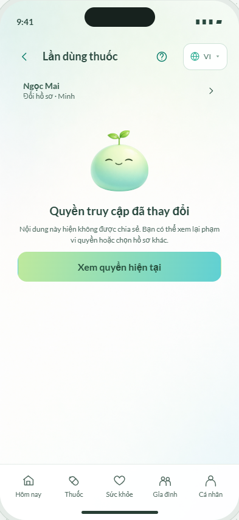
Tác giả thao tác không theo hồ sơ vừa đăng ký
Tên người thao tác lấy từ hồ sơ/tài khoản hiện tại và được ghi vào lịch sử.
Xem ảnh kiểm lại
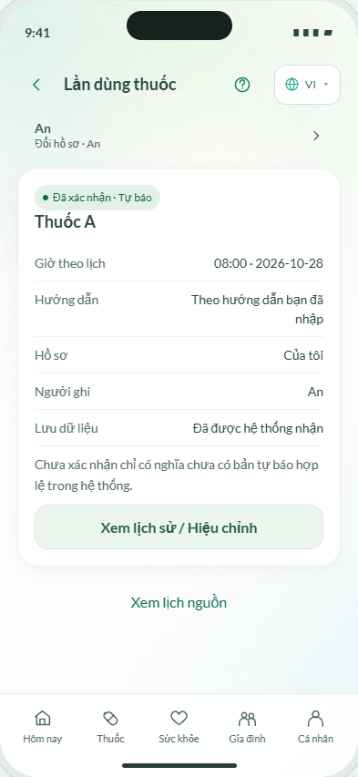
Giờ thuốc ở Hôm nay khác giờ đã lưu
Trang Hôm nay, chi tiết và lời nhắc dùng giờ của lịch; Hôm nay lọc đúng các lịch có lần dùng trong ngày mẫu.
Xem ảnh kiểm lại
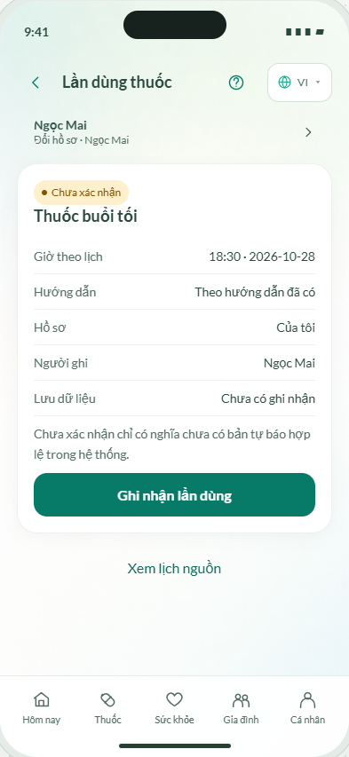
Báo cáo chứa nhóm Sức khỏe đã bỏ chọn
Checkbox vắng mặt là không chọn; báo cáo và snapshot chỉ chứa nhóm và khoảng ngày đã chọn.
Xem ảnh kiểm lại
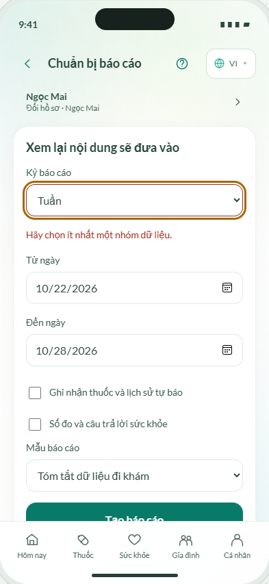
Quay lại cho phép chấp nhận thanh toán lần nữa
Back hoặc bấm lại mở biên nhận thanh toán hiện hữu. Một giữ chỗ mới vẫn được tạo ý định thanh toán riêng.
Xem ảnh kiểm lại
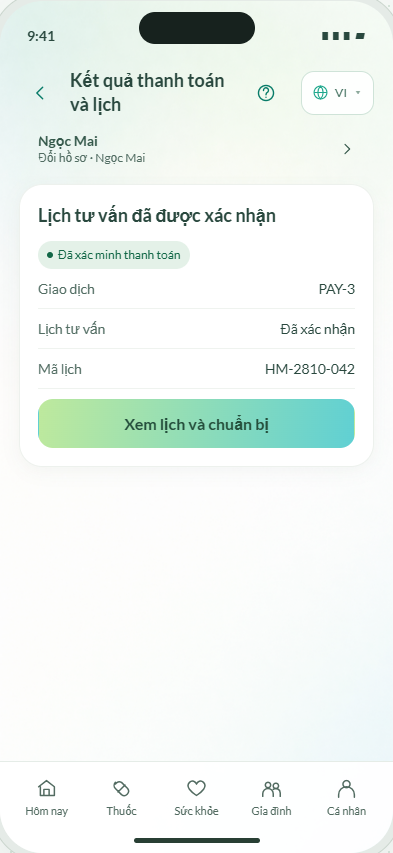
Yêu cầu hoàn tiền bị tạo lại sau khi quay lại
Hủy lại dùng cùng tham chiếu hoàn tiền; màn cũ chuyển sang theo dõi yêu cầu đã có.
Xem ảnh kiểm lại
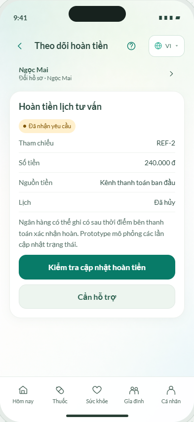
Packet cùng phiên bản nhưng tên thuốc tự thay đổi
Packet chụp riêng thuốc, sức khỏe và báo cáo được chọn. Sửa nguồn không đổi packet cũ.
Xem ảnh kiểm lại
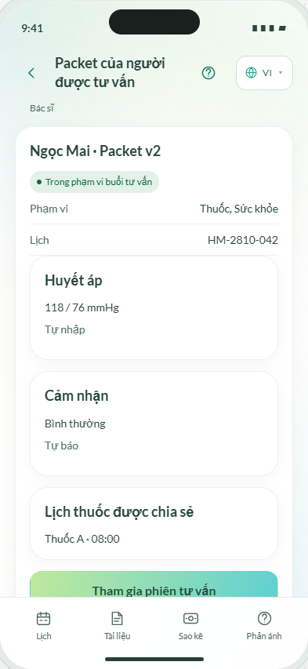
Đích nhận trên lệnh đã gửi bị thay theo payee mới
Lệnh chi giữ bản chụp số tiền, đích nhận, đề nghị và phê duyệt khi gửi. Sửa payee không đổi lệnh cũ.
Xem ảnh kiểm lại
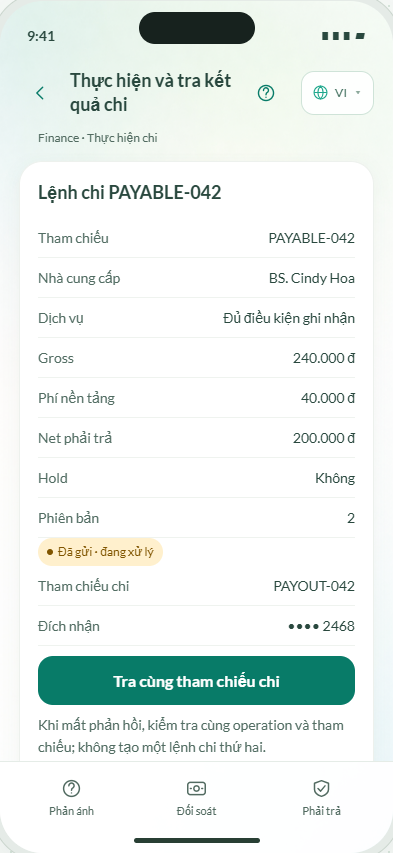
Support không mở lại được ca cũ khi đã có hai ca
Có danh sách và tìm ca theo mã/tham chiếu; chọn ca rõ ràng, các thao tác gắn case ID.
Xem ảnh kiểm lại
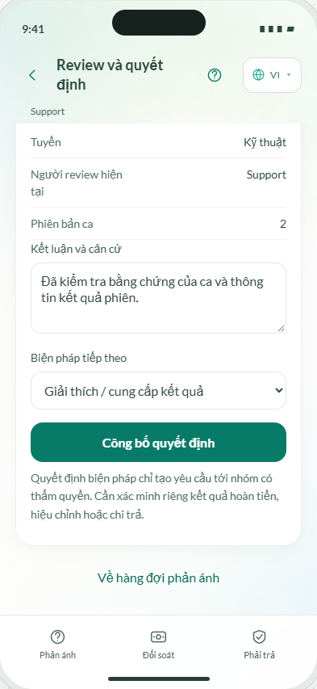
Chế độ Ngày trong tuần thiếu bước chọn các thứ
Có chọn các thứ; kiểm ít nhất một thứ, giữ khi sửa và tính lần dùng theo ngày bắt đầu/kết thúc.
Xem ảnh kiểm lại
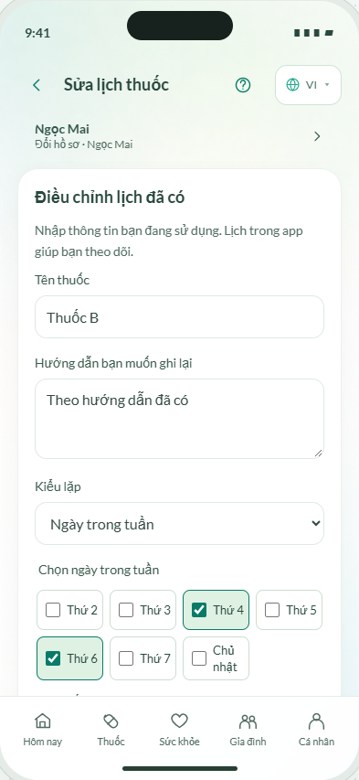
Lỗi mật khẩu chỉ xuất hiện ở thông báo ngắn
Lỗi mật khẩu hiển thị bền vững cạnh trường, focus đúng chỗ và hết khi nhập sửa.
Xem ảnh kiểm lại
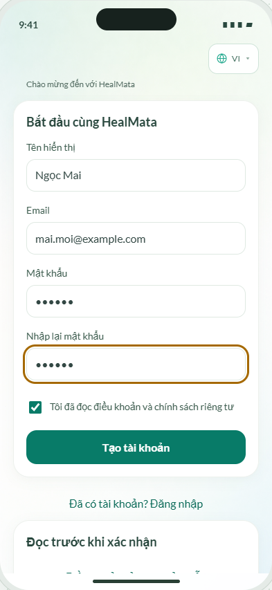
Không mở được điều khoản từ bước đăng ký
Đọc điều khoản/riêng tư của bản mẫu trong popup; quay lại vẫn giữ form và mật khẩu đang nhập.
Xem ảnh kiểm lại
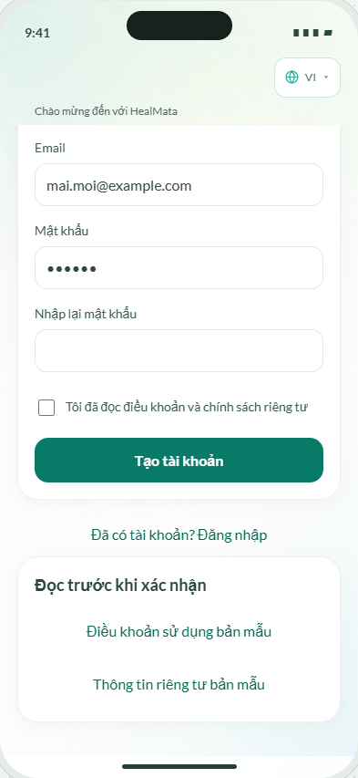
Đổi loại số đo không đổi hoặc lọc đơn vị
Đổi loại số đo tự chọn đơn vị hợp lệ và vô hiệu hóa đơn vị không phù hợp.
Xem ảnh kiểm lại
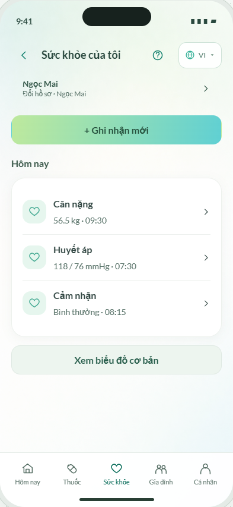
Quay lại màn tạo việc làm mất bản nhập dở
Bản nháp không chứa mật khẩu được giữ theo tài khoản, hồ sơ và màn; tồn tại qua Back/reload.
Xem ảnh kiểm lại
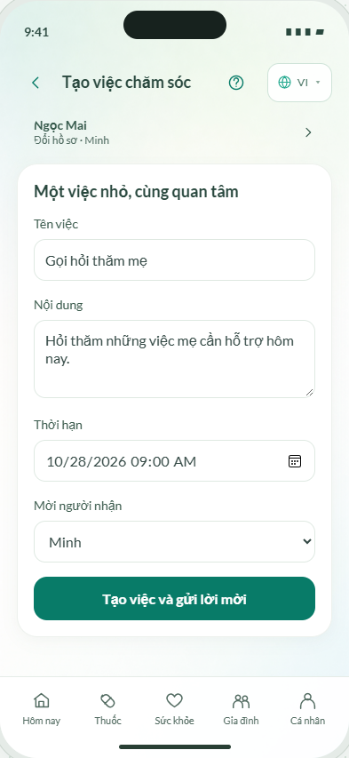
Bấm ghi thuốc offline hai lần tạo hai mục chờ
Bấm lặp offline cho cùng lần dùng giữ một ý định chờ; các lịch khác nhau có hàng chờ độc lập.
Xem ảnh kiểm lại
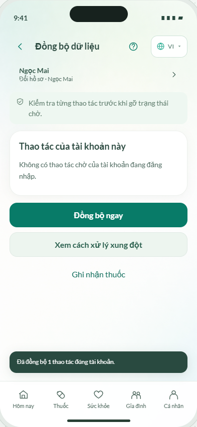
Đóng popup kết quả chưa rõ làm mất dấu trạng thái chờ
Đóng popup vẫn thấy trạng thái đang kiểm tra trên lần dùng, có nút tra đúng operation.
Xem ảnh kiểm lại
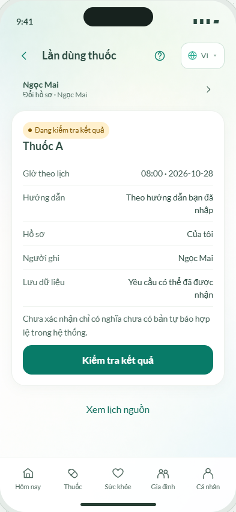
Quyền chỉ xem vẫn cho nhập hết form trước khi bị chặn
Vai chỉ xem được thông báo quyền ngay tại điểm vào; kiểm quyền tại lưu vẫn hoạt động.
Xem ảnh kiểm lại
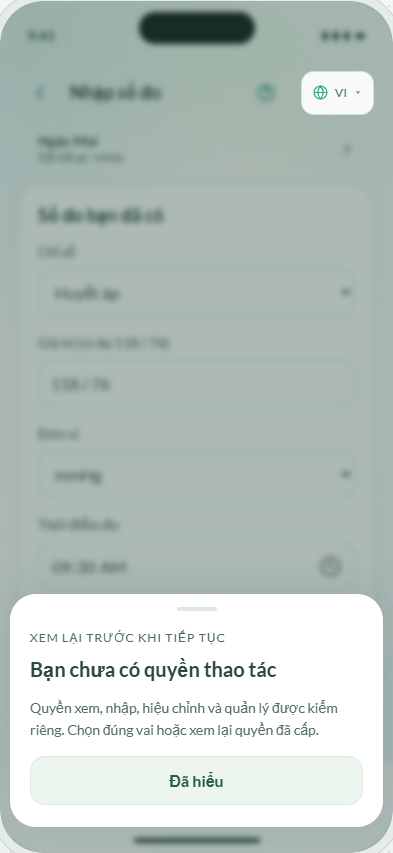
Chữ nhỏ và tương phản thấp ở thông tin, nút chính
Tăng cỡ nhãn/nội dung, làm đậm màu chữ, đổi nút chính sang nền đậm; kiểm tương phản CTA/nhãn và thử chữ 200% ở màn thuốc.
Xem ảnh kiểm lại
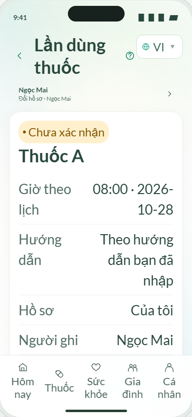
Thông báo chặn Finance dùng ngữ cảnh chia sẻ gia đình
Màn chặn Finance nêu đúng vai cần có và đường về khoản phải trả.
Xem ảnh kiểm lại
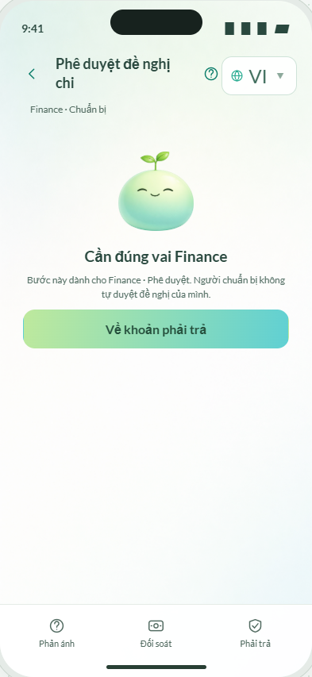
Người duyệt thiếu nhánh trả về sửa hoặc từ chối có lý do
Có Trả về bổ sung/Từ chối với lý do, giữ lịch sử review; gửi lại cần duyệt phiên bản mới.
Xem ảnh kiểm lại
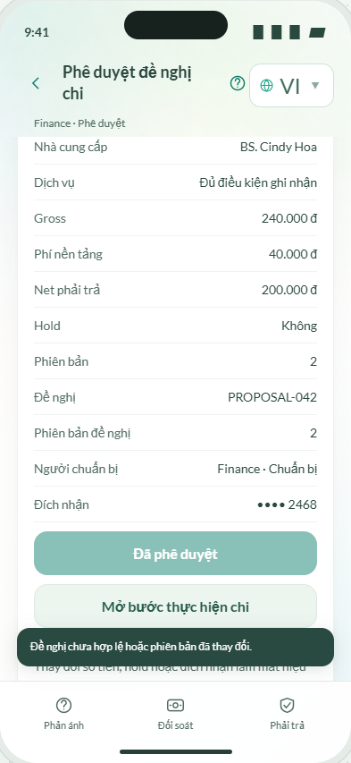
Biểu đồ theo fixture có ngày
Biểu đồ và bảng đọc số đo có ngày từ fixture; đổi kỳ lọc đúng dữ liệu và giữ ngày thiếu trống.
Xem ảnh kiểm lại
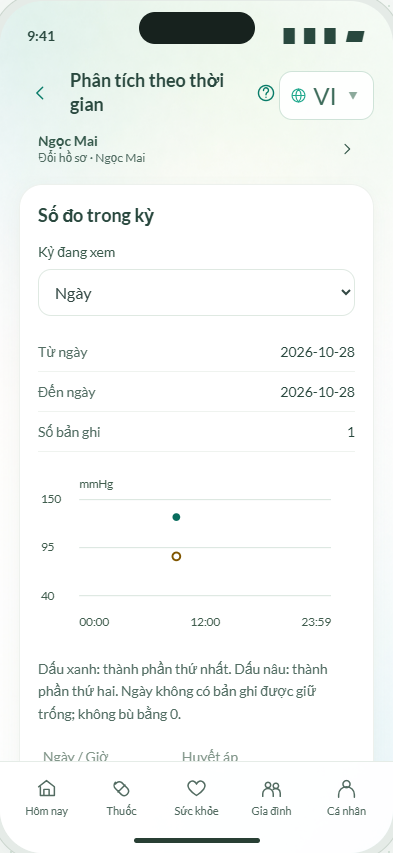
Xóa dữ liệu trong bộ mẫu
Job xóa complete tương ứng dữ liệu mẫu đã được dọn khỏi các kho fixture; vẫn là mô phỏng trên trình duyệt.
Xem ảnh kiểm lại
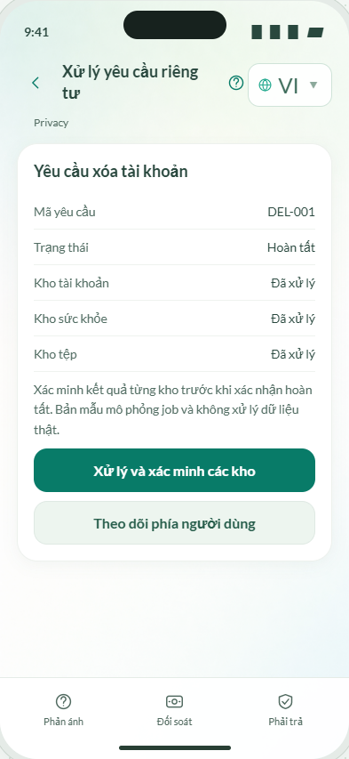
Ảnh là trạng thái trong lượt kiểm. Đây là kiểm trên trình duyệt và fixture; chưa thay cho kiểm người dùng thật hoặc tích hợp dịch vụ thực tế. Không tạo ZIP.